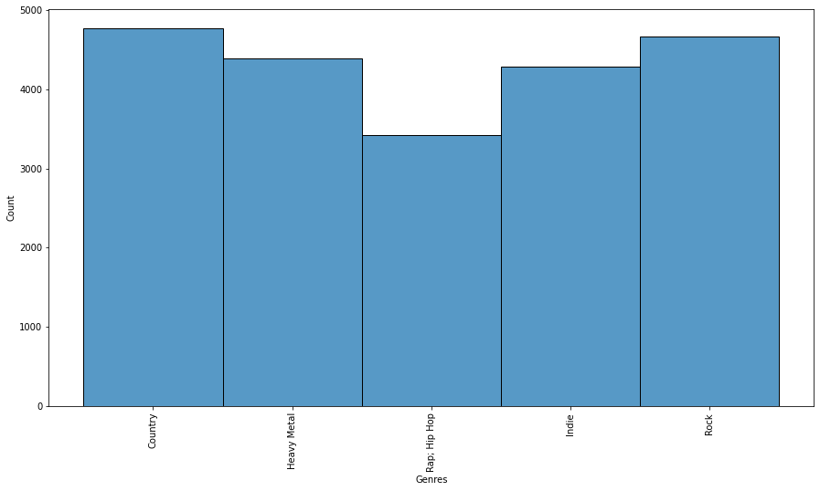

Github and code can be found here.
Problem Statement
Music genres organize music into collections by indicating similarities between different songs. Many music streaming services such as Spotify have high incentives to automate the classification process since they have an estimated 60,000 new songs uploaded onto their site daily. Currently, many music streaming services leverage metadata such as acoustics and emotional tone for genre classification because audio files are more useful than lyrics in terms of classifying a song, due to the high dimensionality of the audio files and low dimensionality of the lyrics. For this project, our objective is to classify songs into genres using song lyrics, and we aim to see how well the various types of neural networks can perform in classifying the songs into different genres using just lyrics.
Data & Methodology
At first, we attempted to webscrape our data from the Lyrics Genius API using the lyricsgenius library in Python, but it was unsuccessful because the lyricsgenius library can only extract song titles, artists, and song lyrics, but not genre information. Then, we tried to webscrape Wikipedia for genre information, but unfortunately, the location that stores the genre information was unstructured, which means that we could not standardize the method of webscrapping the genre section for every song of interest. Ultimately, we decided to obtain our datasets from Kaggle. There were two datasets: one houses the information of artist names, song titles, genre information, etc., and the other contains song lyrics. During the data preprocessing and cleaning stage, the two datasets were merged based on a common key, and all variables except the lyric and genre columns were removed. For further preprocessing, non-English songs were filtered, and only genres that contain more than 3000 songs were kept for model building in order to avoid the problem of class imbalance. Lastly, we cleaned up the song lyrics, such as removing unnecessary components and punctuations.
After preprocessing the data, we ended up with five genres and 21,553 songs. The distribution of the songs in each genre is shown in Fig 1.

The dataset was split into 60% training set and 40% test set. We first implemented the Naive Bayes Model as the baseline model for downstream comparison purposes. We created a pipeline that consists of the TF-IDF Vectorizer and Naive Bayes Classifier (MultinomialNB) and fitted the pipeline to the training data. The test data was used to evaluate the model. Then, we implemented four neural network models, which included CNN, RNN, basic transformer, and small BERT. For the CNN, RNN, and basic transformer, we first applied the tokenizer and position embedding to the text, and for the CNN and RNN, we applied GloVe Embedding for obtaining vector representations for words. We constructed the CNN model by using three Conv1D layers with a max-pooling layer in each of them and a softmax output layer. The RNN was constructed with a bidirectional CuDNNLSTM layer, which is a faster implementation of LSTM, in addition to other layers including a softmax output layer. The transformer architecture consists of multi-head attention of two heads in addition to other layers. Lastly, we implemented small BERT, which is an instance of the original BERT architecture with a smaller number L of layers (i.e., residual blocks) combined with a smaller hidden size H and a matching smaller number A of attention heads. We used BERT preprocessing and embedding on the text. After running all of our models and obtaining predictions, we pulled out misclassifications from each genre to see what kinds of lyric sets were being misclassified and what they were being misclassified as for error analysis.
Results
Using the same training and testing data, the Naive Bayes model performed the worst, achieving 59%. Following Naive Bayes, the transformer showed a slight improvement in accuracy at 61%. The CNN and RNN performed comparably at 65% and 63% respectively. The small BERT model that was implemented last reached a high of 74%. Below is a table containing per model accuracy as well as f1-macro scores.
| Model | Accuracy | F1-Macro |
|---|---|---|
| Naive Bayes | 59% | -/- |
| Transformer | 61% | 0.63 |
| CNN | 65% | 0.65 |
| RNN | 63% | 0.64 |
| Small BERT | 74% | 0.75 |
Fig 2. Table of Accuracy & F1-Macro scores for each model
Precisions for each genre were highest for Heavy Metal (~0.9) and lowest for Rap; Hip Hop for almost all models. small BERT was the exception to this and had much higher precision for Rap; Hip Hop and much lower precision for Heavy Metal. The other genres such as Indie, Rock, and Country all received an increase in precision as well when small BERT was used, just not to the same extent of Rap; Hip Hop. For our error analysis, we extracted 5 samples that were misclassified from each model (one true sample for each genre). Between the CNN and the RNN, both misclassified country and rock lyrics to be from the Rap; Hip Hop genre. The RNN misclassified almost all songs to be from Rap; Hip Hop while the CNN has a more even misclassification distribution between the genres. The transformer model misclassified lyrics as Indie quite often across all genres, and small BERT seemed to have a more even misclassification distribution with all genres being mislabeled with a variety of genres.
Discussion and Conclusions
The Performance of Small BERT
As described in the results, the small BERT performed much better in most categories, but was particularly impressive in classifying indie music as well as hip hop. Every other model performed terribly in both of these genres. One reason could be because hip hop is well known for its diverse vocabulary as was seen in the song lyrics in our test set. One instance where small BERT is known to have great improvements is on words that have not been seen before. This point is further supported in our results through the hip hop’s drastic increase in F1 score. Even compared to a regular transformer, this is more evidence that small BERT was a revolutionary architecture developed in natural language processing.
Overall Performance
For our error analysis, we extracted some misclassifications to see where our models were improving poorly. With one misclassed sample from each genre for each model, we could see that Rap; Hip Hop was a common genre that models misclassified song lyrics as. The reason as to why is not clear to us, but we believe it is because Rap and Hip Hop have such a variety of words and a variety of slang. Because there are less connections between these words and others, pre-trained embeddings may not work as well as they would with songs that have “standard” words. Again, this is most likely why small BERT does so well with Rap; Hip Hop - since small BERT handles unseen words better than the others, it will train on and predict Rap; Hip Hop better than the others.
Future Work and Improvements
There are many possible areas that can be explored to improve our models’ performances. The first that would definitely improve our models is gathering more data. More songs lyrics and genres would surely help improve our accuracy. Another area that could be improved was how we labeled the songs genres. We labeled it based on the artists genre rather than individual song genres. This could have led to misclassifications because artists sometimes write songs in more than one genre. Another interesting area that we could try to explore is ensembling our models. Different models had better F1 scores in different areas so an ensemble might be able to catch these differences. Lastly, another area that could be explored is multi-label modeling. Some songs can be classified as multi genres so it would be interesting to see how well our model does if songs were labeled in this way.
Final Thoughts
To evaluate music genres by solely using lyrics proved to be a much more difficult task than initially thought. Using purely lyrics to predict the genre of song has shown to be hard to achieve. Small BERT was shown to greatly outperform the other models in the majority of class wise accuracy. These models are also only predicting on five genres of songs. If this were expanded to more specific genres, the accuracy and F1 would unquestionably decrease. The fact that we had reasonable accuracy shows that there is a difference between song genres and lyrics, but that line is more blurred than we had thought. Regardless, this is an interesting problem that’s important to solve.